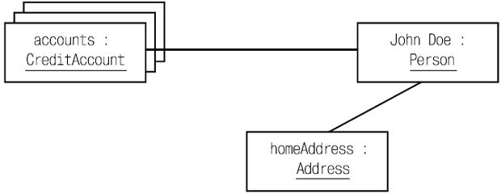
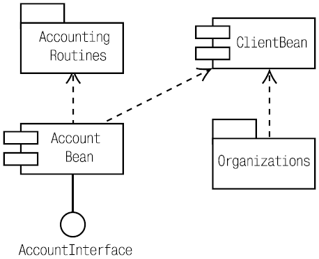

UML. Виды
диаграмм UML
Для представления архитектуры,
а, точнее, различных входящих в нее структур, удобно использовать графические
языки. На настоящий момент наиболее проработанным и наиболее широко
используемым из них является унифицированный язык моделирования (Unified
Modeling Language, UML), хотя достаточно часто архитектуру системы
описывают просто набором именованных прямоугольников, соединенных линиями и
стрелками, которые представляют возможные связи.
UML предлагает использовать для
описания архитектуры 8 видов диаграмм. 9-й вид UML
диаграмм, диаграммы вариантов использования (см. лекцию
4), не относится к архитектурным представлениям. Кроме
того, и другие виды диаграмм можно использовать для описания внутренней
структуры компонентов или сценариев действий пользователей и прочих элементов,
к архитектуре часто не относящихся. В этом курсе мы не будем разбирать
диаграммы UML в деталях, а ограничимся обзором их
основных элементов, необходимым для общего понимания смысла того, что
изображено на таких диаграммах.
Диаграммы UML делятся на две
группы — статические и динамические диаграммы.
Статические
диаграммы
Статические диаграммы представляют либо постоянно
присутствующие в системе сущности и связи между ними, либо суммарную информацию
о сущностях и связях, либо сущности и связи, существующие в какой-то
определенный момент времени. Они не показывают способов поведения этих
сущностей. К этому типу относятся диаграммы классов, объектов,
компонентов и диаграммы развертывания.
Классы представляются прямоугольниками, поделенными на
три части. В верхней части показывают имя класса, в средней — набор его полей,
с именами, типами, модификаторами доступа ( public ‘+’, protected ‘#’, private
‘-’ ) и начальными значениями, в нижней — набор операций класса. Для каждой
операции показывается ее модификатор доступа и сигнатура.
На рис. 31 изображены классы Account, Person, Organization,
Address, CreditAccount и абстрактный класс Client.
Класс CreditAccount имеет private поле maximumCredit
типа double, а также public метод getCredit() и protected метод setCredit().
Рис. 16.5. Диаграмма классов
Наиболее часто используется три вида связей между
классами — связи по композиции, ссылки, связи по наследованию и реализации.
Композиция описывает ситуацию, в которой объекты класса A
включают в себя объекты класса B, причем последние не могут разделяться (объект
класса B, являющийся частью объекта класса A, не может являться частью другого
объекта класса A ) и существуют только в рамках объемлющих объектов
(уничтожаются при уничтожении объемлющего объекта).
Композицией на рис. 16.5 является связь между
классами Organization и Address.
Ссылочная связь (или слабая агрегация ) обозначает, что объект
некоторого класса A имеет в качестве поля ссылку на объект другого (или того же
самого) класса B, причем ссылки на один и тот же объект класса B могут иметься
в нескольких объектах класса A.
И композиция, и ссылочная связь изображаются
стрелками, ведущими от класса A к классу B. Композиция дополнительно имеет
закрашенный ромбик у начала этой стрелки. Двусторонние ссылочные связи,
обозначающие, что объекты могут иметь ссылки друг на друга, показываются
линиями без стрелок. Такая связь показана на рис. 16.5 между классами Account
и Client.
Эти связи могут иметь описание множественности,
показывающее, сколько объектов класса B может быть связано с одним объектом
класса A. Оно изображается в виде текстовой метки около конца стрелки,
содержащей точное число или нижние и верхние границы, причем бесконечность
изображается звездочкой или буквой n. Для двусторонних связей множественности
могут показываться с обеих сторон. На рис. 16.5 множественности, изображенные
для связи между классами Account и Client, обозначают, что один клиент может
иметь много счетов, а может и не иметь ни одного, и счет всегда привязан ровно
к одному клиенту.
Наследование классов изображается стрелкой с пустым наконечником, ведущей
от наследника к предку. На рис. 16.5 класс CreditAccount наследует классу Account,
а классы Person и Organization — классу Client.
Реализация интерфейсов показывается в виде пунктирной
стрелки с пустым наконечником, ведущей от класса к реализуемому им интерфейсу,
если тот показан в виде прямоугольника. Если же интерфейс изображен в виде
кружка, то связь по реализации показывается обычной сплошной линией (в этом
случае неоднозначности в ее толковании не возникает). Такая связь изображена на
рис. 16.5 между классом Account и интерфейсом AccountInterface.
Один класс использует другой, если этот другой
класс является типом параметра или результата операции первого класса. Иногда
связи по использованию показываются в виде пунктирных стрелок. Пример такой
связи между классом Person и перечислимым типом AddressKind можно видеть на рис.
16.5.
Ссылочные связи, реализованные в виде ассоциативных
массивов или отображений (map) — такая связь в зависимости от некоторого набора
ключей определяет набор ссылок-значений — показываются при помощи стрелок,
имеющих прямоугольник с перечислением типов и имен ключей, примыкающий к
изображению класса, от которого идет стрелка. Множественность на конце стрелки
при этом обозначает количество ссылок, соответствующее одному набору значений
ключей.
На рис. 16.5 такая связь ведет от класса Person к
классу Address, показывая, что объект класса Person может иметь один адрес для
каждого значения ключа kind, т.е. один домашний и один рабочий адреса.
Объекты изображаются прямоугольниками с идентификаторами ролей объектов (в контексте тех состояний, которые изображены на диаграмме) и типами. Однородные коллекции объектов могут изображаться накладывающимися друг на друга прямоугольниками.
Такие диаграммы используются довольно редко.

Рис. 16.6. Диаграмма объектов
Диаграммы компонентов (component diagrams) представляют компоненты в нескольких смыслах — атомарные составляющие системы с точки зрения ее сборки, конфигурационного управления и развертывания. Компоненты сборки и конфигурационного управления обычно представляют собой файлы с исходным кодом, динамически подгружаемые библиотеки, HTML-странички и пр., компоненты развертывания — это компоненты JavaBeans, CORBA, COM и т.д. .Компонент изображается в виде прямоугольника с несколькими прямоугольными или другой формы "зубами" на левой стороне.
Связи, показывающие зависимости между компонентами, изображаются пунктирными стрелками. Один компонент зависит от другого, если он не может быть использован в отсутствии этого другого компонента в конфигурации системы. Компоненты могут также реализовывать интерфейсы.
Диаграммы этого вида используются редко.

Рис. 16.7. Диаграмма компонентов
На диаграмме компонентов, изображенной на рис. 16.7, можно также увидеть пакеты, изображаемые в виде "папок", точнее — прямоугольников с прямоугольными "наростами" над левым верхним углом. Пакеты являются пространствами имен и средством группировки диаграмм и других модельных элементов UML — классов, компонентов и пр. Они могут появляться на диаграммах классов и компонентов для указания зависимостей между ними и отдельными классами и компонентами. Иногда на такой диаграмме могут присутствовать только пакеты с зависимостями между ними.
Диаграммы развертывания (deployment diagrams) показывают декомпозицию системы на физические устройства различных видов — серверы, рабочие станции, терминалы, принтеры, маршрутизаторы и пр. — и связи между ними, представленные различного рода сетевыми и индивидуальными соединениями.Физические устройства, называемые узлами системы ( nodes ), изображаются в виде кубов или параллелепипедов, а физические соединения между ними — в виде линий.
На диаграммах развертывания
может быть показана привязка (в некоторый момент времени или
постоянная) компонентов развертывания системы к физическим устройствам —
например, для указания того, что компонент EJB AccountEJB исполняется на сервере приложений, а аплет AccountInfoEditor — на рабочей станции оператора банка.

Рис. 16.8. Диаграмма развертывания
Эти диаграммы используются достаточно редко. Пример диаграммы развертывания изображен на рис. 16.8.